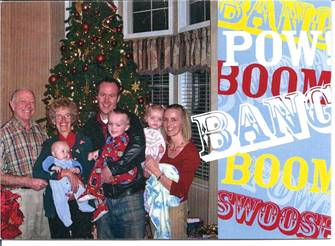
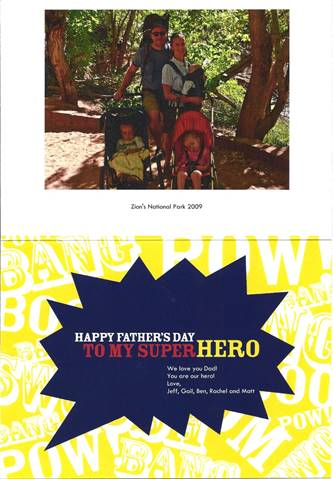
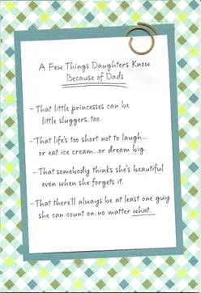
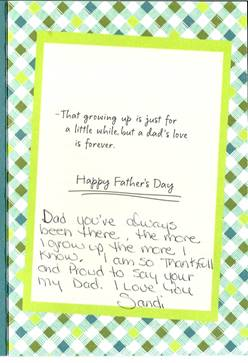
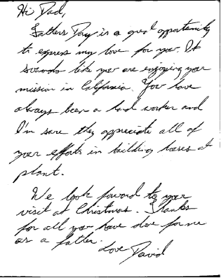

PRINTED
Tuesday, June 01, 2010
We were up early so that I could be at the job site by 7AM. Elder Judd and I continued with the framing. We quit and cleaned up by 4PM. With Lee’s help we got the sheathing on the north side of the roof. That gave Elder Judd time to help his wife with Cub Scouts. It put me home in time for me to take a shower, take a short nap and for Mae and I to be into Bakersfield for a dinner appointment with the Aguilar’s The Aguilar’s are natural born Philippines but immigrated to the United State in 1980. Mae met Sister Aguilar at Stake Conference and said Hello. She noticed Mae’s Missionary badge and asked her about it. In their conversation Mae told Sister Aguilar that we had served in the Philippines as missionaries. Sister Aguilar said that she and Brother Aguilar had sold their home and had moved into an apartment and are waiting for a mission call. She said that they would like to invite us to dinner so that we could become better acquainted and we might be able to answer some questions as to what to expect when you are called to serve a mission. The Aguilar’s received their mission call this last week and are called to go to the Philippines. Sister Aguilar had prepared a wonderful Filipino Dinner. We really enjoyed the evening with them. It was 10PM when we returned home.
Wednesday, June 02, 2010
I was up by 5AM but let Mae sleep in. She did get up at 6:30 and see me off. Elder Judd and I finished the framing of the single home. After lunch we got the duplex laid out. We cleaned up and I left by 4PM. I stopped on the way home and had my pickup serviced. Mae helped Sister Judd and Sister Pain clean up the house that Darrel and Pennie moved out of. They were all morning doing that as the house was left quite dirty. She then went to Bakersfield shopping. It was after 6PM when she got home. We had dinner and then watched a DVD movie. I finished this entry and we went to bed.
Thursday, June 03, 2010
Elder Judd and I continued to lay out the plates for the outside walls. At noon Elder and Sister Judd left to go to Yosemite National Park with their son and family. The building inspector came about noon and did the framing inspection on the house. It was very good and he signed of the inspection report. I asked him a couple of questions about the window clearance from the floor, and about the water closet addition for the duplex. He also saw my Missionary badge and asked several questions about our Mission and how that worked. We visited for several minutes. I worked this afternoon until Lee told me to quit and go home. I got home at 4:45PM. Mae soon had diner ready. Home Depot Delivery brought the micro wave oven that we had purchased last week. It will go in Armreta’s apartment. We watched another serious of ZAG this evening. Scott called and we visited for a few minutes then he tried to help Mae install the Conference talks to the IPod, but they couldn’t get it to work. Bob called and the sewer line plugged up and ran over our kitchen sink. He told me that it had backed up some but today they found that it was a lot more than they had originally expected. It looks like it has done quite a bit of damage to the carpeting and the cabinets. Wipple Plumbing will be there tomorrow to assess the problems.
Friday, June 04, 2010
I got to the job site before 7AM and started. Lee soon came and worked with me most of the day. Bishop Spencer Birch also spent quite a while helping us frame. There was also several of the plant office personal that came out and gave us help lifting and placing the walls when we got them nailed together. There was a lunching held for all the plant management and their families, which sister Browning and I were also invited. It was very nice. Lee indicated that maybe I should call it a short day but I wanted to get more done before quitting. It was after 4PM when we quite but we had the west, south and east walls framed and standing plus the small north walls framed before we quite. After dinner this evening Mae and I took some pictures outside. I then downloaded the pictures from the camera and resized some so Mae can e-mail them to our family. We then watched a DVD that we purchased. It was a cute story of a boy growing up and deciding what he wants to do with his life. We really enjoyed the movie. I sure enjoyed being home with Mae and relaxing.
Saturday, June 05, 2010
I woke up about 4AM and fearing that I would wake Mae I slept a while in the recliner. When Mae woke we enjoyed rubbing each other’s feet for a while. I prepared breakfast while Mae did her hair. After breakfast I made a batch of almond butter. Mae has been busy preparing for Georgia and Rick’s arrival. I called Bob and talked to him about the apartment and if the insurance pays what we expect it will it will cost about $1,200 to have the drain pipe taken out and repaired right. The carpeting, kitchen flooring, cabinet top and possibility some of if not all of the cabinets has to be replaced. Some of the sheetrock is being replaced so that means some painting. With all that work and having the drain repaired so that we don’t have to continually watch that, it should be worth it. Georgia and Rick arrived here about 1:30PM. Mae had lunch ready. We sure have enjoyed visiting and being with them. We toured around the farm and explained some about the harvesting and processing of the nuts. We mainly set around relaxing and visiting. We played Knock for a while. I was the last one to shower and go to bed and that was mid-night.
Sunday, June 06, 2010
We slept in as it as today is Fast Sunday. We attended Church and enjoyed the spirit there. In Sunday school the room was very cold so rick and I adjusted the temperature which Mae and Georgia said it felt much better for Relief Society. However we then were told that the Nursery was way to warm. After leaving the chapel we drove out to the homes at the Sherwood farm as Rick and Georgia know Tenney and Jenny Lamoreaux and they wanted to meet them. When we got home Mae had a very nice dinner soon prepared. We relaxed and visited. Later we watched a documentary on the National Parks. We made reservations to go on a tour at the Hearst Castle tomorrow. It was after 10 PM before we got to bed.
Monday, June 07, 2010
We got up early so that we could go to Hearst Castle today. Mae prepared waffles and scrambled eggs for breakfast. We sure had fun being with Rick and Georgia. We had a tour scheduled and reserved for 1:10PM so we had time to eat lunch before being at the ticket office. As we entered the tour gate they took a group picture of the four of us. We really enjoyed the tour through the castle but it was interesting how so much money could be spent just to satisfy one personal gratifications. It was about 9PM when we got home so I soon went to bed.
Tuesday, June 08, 2010
I got up and let the rest sleep in a little longer. Work went well and we felt good about what we got done today. Mae brought Rick and Georgia over to the plant and had arranged for them to have a tour of the plant. They did take time to see the houses we are building. Lee with some other workers poured some cement for a gas tank pad. Elder Judd was also helping him and about noon Elder Judd came to me and said that Lee had gone for a few minutes and that hee, Elder Judd, had to go into a Dr. for some test results. He ask if I could keep watch on things until Lee got back. I noticed that all the Spanish help had gone to lunch. I could hear the cement mixer working quite hard. I went over and the trailer has jumping with the turning of the concrete in the mixer. I looked inside the barrel and realized the concrete was getting quite hot. I added water to stop the cement from setting up and called Lee to see what his timing was. Had I not checked there could have been real problems. I stayed with the cement until we got it poured and some post placed. After lunch Mae and Georgia went shopping in Bakersfield. They had a good time and got some good sales. I think the best time was for the two of them to spend some time together. Rick enjoyed staying home and said he got some reading done that he wanted to do. I came home about 4PM and Rick and I got talking. Mae called and I gave her the choice to go out to eat or tell me what she wanted us to prepare for dinner. Rick and I ended up getting dinner ready just about the time Georgia and Mae got home. After dimmer we watched a DVD made by Brandy to celebrate Nolan’s tenth year from the time he was hit by lightning. Georgia and rick then explained an experance they had that day in connection with Nolan. We then played a game of Mormon Bridge in which Rick ended up winning. It was late when I went to bed but it has been a great day and evening. Mae stayed up later.
Wednesday, June 09, 2010
I let Mae sleep in again this morning but she woke before I left for work. Rick and Georgia wanted to go walking with Mae again this morning. Mae said that it was almost 11AM before they got away. It has sure been nice having them come and visit us. Work went well today and we accomplished quite a lot. It was five PM before I got home. The missionaries were waiting outside when I got there. They had just arrived for a dinner appointment with us. I just washed up and Mae had a nice dinner on the table for us. We enjoy having the missionaries come for dinner with us. After the Elder’s left I showered and cleaned up. I caught up my journal. Mae and I then watched another show in the J.A.G. series. I finished my journal entries and we soon went to bed.
Thursday, June 10, 2010
Mae got up with me and prepared my breakfast and lunch. There will be a farewell dinner for Elder and sister Judd at noon but we are not sure if it will be something that we can eat. Work went well this morning and we should be ready to put up trusses tomorrow. Mae went Visiting Teaching, stopped and purchased some items for the dinner today. The lunching was very good and most of it we could eat. It was also nice to have lunch with my sweetheart. Elder Judd and I finished putting on the sheathing before we quite. It was after 5PM when I got home from work. Mae had me lay down and take a nap before dinner. I was going to take my shower after eating but the sprinklers came on and they take all the water so I waited. We watched a show on DVD, “Love In the Afternoon” with Gary Cooper and Audrey Hepburn. It was after 9PM when it finished. I took a shower and we went to bed. I sure love my beautiful wife and Eternal companion.
Friday, June 11, 2010
Mae made omelets for breakfast this morning. I have to read the water meters for the Kimberlina home while Lee is gone. That job has to be done each day. We hadn’t been to work very long when the crane operator came to lift the trusses onto the roof for us. I still had to lay the walls out. We got a few trusses set when the plant needed the crane to move the propane tank. That took about an hour that we mainly had to stand around. The company came to dig and install the septic tank and drain hole. The drain hole was about 8 foot in diameter and was dug 46 feet deep. The digger was quite neat to watch. It had a auger that would turn down and fill up, then they would lift it up and the bottom would open and dump the dirt in a pile to the side of the hole. It was neat to watch. When the crane returned, there was just Elder Judd, one Spanish fellow and myself to set the trusses. We had all the trusses set by noon. Mae came over and took some pictures of us setting the trusses. This afternoon we set ties and set bracing up. I came home and ate dinner so Mae could get the dishes done before the Judd’s came. We had a good time playing card games and visiting. It was 10:30 before they went home. We soon went to bed.
Saturday, June 12, 2010
We did sleep in this morning and then after breakfast we went into Bakersfield shopping. We found a Carpet One store and looked at their flooring for the kitchen area and carpeting for the front room, sun room and hallways. We did look at kitchen cabinets at The Home depot but we are not satisfied at their cabinets in comparison to the Field Cabinets we presently have. We stopped for lunch at Sizzler and then went to Lassens. It cost us $100 for two sacks of groceries that I could easily carry out to the car. I took a 15 minute nap when we got home and then we went to the park at Kimberlina for a Ward party. We took our own food as most of the food was not on our diet. It was a good social with a good attendant. I came home and hoped to watch a movie but instead Mae and I worked on our lesson for nursery tomorrow until 11PM. We quite and went to bed.
Sunday, June 13, 2010
We got up at 6AM and had to hurry to be at church on time. I had to stop at the Kimberlina housing water station and take readings before going on to the chapel. We went right to the nursery room and got it set up. We went to the chapel in time to practice the music that we will be singing today in meeting. Sacrament meeting was very good. Two High Councilmen spoke and the choir sang. We then went to the nursery where we had 9 active boys and two girls. It was a busy two hours and we came home very tired. After getting a light lunch we took a nap. We slept about two hours. I called Brother Neiderhauser in Clinton and asked him if he would go over and look at the kitchen cabinets in our apartments and get an opinion as to what will have to be done to repair them or if they will have to be replaced. I talked to Bob and he now is having trouble with the water softener. I downloaded the pictures from the camera and worked on getting the childrens pictures download that we took today. I have them ready to print but we don’t have photo paper here. I caught up my journal and it is now after 9PM so I guess we had better go to bed.
Monday, June 14, 2010
Mae hadn’t slept very well so I had her sleep in. She had put my lunch and breakfast together during the night hours in which she couldn’t sleep. I went to work, stopping on the way at the Kimberlina housing water pump to take the daily readings. I then went to the Kimberlina shop and added water to the water container in my pickup. I also picked up two bottles of water for our house. We continued working on the house and decided that we needed a different saw and while at it a new cordless drill as the one we have has two bad batteries. We also need some coil nails for the sheathing, so I went to Bakersfield in search of the items. It was after noon when I returned only getting part of the items we wanted. Elder Judd and I sheathed the gable ends and cut the truss tails even. At 4 PM we quite work on the house and I went over to Dibble’s and checked their clothes dryer. It is warren out and in my opinion not worth working on. Elder Judd located a store Bakersfield that carries the coil nails that we want so I will go there in the morning. When I got home Mae had dinner about ready. I had time to shower and clean up before dinner. After eating we lessoned to a cassette tape entitled “The Trial” and really enjoyed it. I filled in this entry before going to bed.
Tuesday, June 15, 2010
I got up early so that I could go into Bakersfield by 6AM. Mae was upset at me last night because I was getting up so early. Yesterday I spent so much time going into Bakersfield that I didn’t want to loss that much time today. I was able to get the items that I needed and was back to the plant by 7:30AM. Mae went to the nursing home today. She came over to the job sight and brought my lunch as I had forgotten to get it this morning. She stayed and ate lunch with me and that was sure enjoyable. Elder Judd and I quite work at 3:15 PM and cleaned up. We were both tired and hot. Mae went into Bakersfield and got me another back brace. We got home about the same time this afternoon. I showered and took a nap before dinner. I talked to Bob concerning the problems there. I think he is going to be able to get things taken care of. After dinner we watched a JAG series and went to bed.
Wednesday, June 16, 2010
Work went well this morning. Elder Judd and I got the facia on the two gable ends and started on the sheathing of the roof. Sister Judd has been busy trying to get packed to go home on Friday. I told Elder Judd that he should quit and help his wife. He wouldn’t hear of it. About 11:20 AM I heard a sheet of sheathing drop and as I turned, I saw elder Judd’s feet going over the edge of the roof. I ran to the edge of the roof and Elder Judd was laying on the ground. I asked if he was ok to which he replied the he thought so. I quickly got off the roof and ran to him. We slowly straightened him out but he said he only hurt in his arms. He set up and then got up. I had him set and rest a few minutes. He suggested that he should go to the house. I agreed that he should and should rest for a while. A few minutes later Sister Judd asked where Therin had gone. I realized that she had been gone when Elder Judd had gone to the house. I told her she should check on him because he had gotten hurt. I went to the house to see if he was ok. Sister Judd had called her son who is the CEO of the hospital and he had told them to come into the hospital to be checked. I took a lunch break and then continued to work by myself. Later Fernando came out and I asked him if any of the bosses were there. They are all gone either on assignments or on vacation this week. I told him what had happened to Elder Judd and wondered who I should tell about it. He didn’t know. Fernando later came out and helped me with the sheathing. I was very tired when I left for home. I called Mae and she asked if I would stop at Apple’s market for a few items which I did. Mae had dinner ready by the time I washed up. After dinner I watched a movie on DVD. I then took a shower and typed this entry. Mae called Kylan and we wished him a Happy Birthday. She also talked to Scott for a while this evening.
Thursday, June 17, 2010
Work went fairly well today. Fernando Osorio came out and helped me this morning. We finished putting the roof sheathing on. He also started nailing it for me. That was a great help. Mae came over and helped Elder and sister Judd finish their packing and helped with the cleaning of the trailer. I was asked if I could repair a wall in the employee’s lunch area as workers are preparing to replace the flooring throughout that area. I had to go into Shafter and buy some drywall mud and some tape. When I got back Mae came out and we ate lunch together. I had Mae help me on the roof to chalk out nailing lines. It was cute the way she would move around on the roof with fear of being on the roof. I really did appreciate her help in chalking the lines, for it saved me a lot of walking back and forth. After putting the first coat of mud on the patch I went over to Lee’s shop for some tools. I washed my pickup as it really needed it. After getting home I showered and took a nap. Mae let me sleep about ½ hour and then she woke me for dinner. We went over to the Wasco Ward House for a special fund raising dinner put on by the Young Women to raise funds for Girl’s camp. It was quite special as they prepared a special dinner for Mae and I because of our diet. We thought that was very special of them. We stopped at the grocery store for a few items and then took some throw carpets to the Judd’s that Mae had washed for them. We then stopped at Lee’s shop for a router before coming on home. I filled out this entry while Mae prepared my lunch for tomorrow. It’s been a busy day.
Friday, June 18, 2010
Mae got up with me to get me off to work. I stopped and read the water meters before going on to the plant. I got there just as the Judd’s were about to leave. I did get to visit with them for a minute. I finished the roof sheathing and then cleaned up the house and put the tools away. I was concerned with the tools being left out without anyone living there over the weekend. I called Mae while I was on the way home. She asked me to stop at Apple’s market for some cookies. It was after 5PM when I got home. Mae had dinner about ready but wasn’t sure when Roy and Linda would get here. I took a shower and a nap. Before going to sleep Mae rubbed my feet. She is sure good to me. It was about 7:15PM when Roy and Linda got here as they had gotten lost and didn’t have our phone numbers with them. Linda said to Mae when she greeted them “It’s good to see a friendly face.” She said that Roy was so mad at her for not bringing our phone numbers. We enjoyed visiting while we ate and after doing the dishes we planned the trip for tomorrow. Linda had been worried for some time on how we would be able to find the places we wanted to see in Los Angeles as it is the largest land mass city in the world. While she was looking at the map and Mae was looking on the internet, finally Linda said: “What do you think about going on a tour of the city?” We thought that was great so Mae looked up tours in L.A. and founds L.A. Tours. It showed all the places we wanted to see plus many more. Mae called and they did have a few openings and it would cost us $60.00 for seniors. We scheduled it. We will have to leave by 6AM in the morning in order to get to the tour that we have registered for. Good night!
Saturday, June 19, 2010
When I woke Mae I gave her a kiss and wished her a Happy 51st Anniversary. I had got up at 4AM and woke Mae at 4:30AM. We got ready and started breakfast and woke Roy and Linda at 5PM. It was a little after 8AM when we got to LA. It took us a little while to find the tour Co. that we made reservations with. We asked two police officers and both gave us wrong directions, but we found it anyway. We started the tour at 9:15AM and got back to the office at 3:30PM. We were sure glad that we had scheduled with a tour group. It would have been a disaster if we had tried to see the city on our own. As it was we saw and were told about Marina Delray Bay, Venice, beaches where we had time to walk out to the ocean, Santa Monica, LA Oil Fields, Beverly Hills, a special place where we got a good view of the “HOLLYWOOD” sign and many more places of interest. We saw many shops, homes of the “Rich and Famous”, USC campus, the financial areas, residential areas, golf courses and many more points of interest. We all agreed that it was the best way to see the LA area. We stopped for some dinner before coming home. It was going on 9PM when we got home so I didn’t take time to fill out this entry but just went to bed.
Sunday, June 20, 2009 ***FATHERS DAY***
Roy and Linda attended our church meetings with us. After Sacrament meeting we left them to attend Sunday school and Priesthood and Relief Society meetings without us as we had the Nursery to be over. The children we full of it today and when the two hours were over we were very tired. We stopped on the way home at the plant and showed Roy and Linda the homes we are building. Mae prepared a very nice dinner. We enjoyed the rest of the day visiting and playing games with Roy and Linda. This time together has been good as we have cleared up some old miss-understandings. It was late when we went to bed. I got a call from Sandi, Scott and Mike wishing me a Happy Fathers day, also a call from Logan and I thought that was very secial for him to call. I received a Father’s Day card from Jeff, Gale and the children in the mail on Saturday.
 
 

Monday, June 21, 2010
I left for work at 6:30AM. Mae had got up before I went to work but I let her sleep in. I guess Roy and Linda didn’t get away until it was after 8AM. Work went well and after 8AM I called tor a framing inspection, expecting it to be tomorrow. However about 11AM the inspector came. He complemented me on the well built house. There was one problem and that was with the blocking of the trusses at the outside walls. California requires blocking different that Utah, Idaho and Arizona. I will make those adjustments but other than that he passed the house ok. I cut the new blocking out of any scrap 2 X 6 that was left over. I used Lee table saw to cut to blocking to size. Lee got home today and we at the shop when I came to cut the blocking. It was good to visit with him. When I got home Mae had me take a shower and a nap. We read a couple of talks from conference and then Mae read the information that she had typed about David’s life. She had done a good job. I filled in this entry and we watched a JAG movie and went to bed.
Tuesday, June 22, 2010
Mae got up to get me off to work. I worked in Lee’s shop making vent blocking as the inspector wants the blocking changed. The plumbers were working on the duplex today and should be finished tomorrow. I built the end shelves for the tubs in the baths of the duplex. I did get quite a bit done but a lot of my time was working with other. I came home before 4Pm this evening. I did take a nap before dinner. Shellie and Jase arrived at 7:40PM. We enjoyed visiting with them. It was almost 10PM when I finished this entry and went to bed.
Wednesday, June 23, 2010
Shellie and Mae stayed up late visiting so I let them sleep in this morning. Mae had prepared my lunch and breakfast before she went to bed. Work went well on the house today. I went into Bakersfield and ordered the shingles for the house on the condition of the approval of Lee. The plumbers finished the rough in but the HVAC team didn’t come. I helped Lee move his cabinets to his house after I quite working. I had time to come home, shower and change and eat before I went back to the plant where the Young Men from our ward came and I showed them the houses and told them about the construction trade. I came home and took a nap and then we watched a show of JAG before I went to bed. Mae and Shellie again stayed up.
Thursday, June 24, 2010
Mae again had my breakfast and lunch prepared. Work went well. They hired a young Spanish fellow to work with me as a helper. I got him set up with work to do and then I went back into Bakersfield with a change in the drip edge of the roofing order. When I got back Hernandez had the work done that I had left him with and was sweeping out the houses. We put the windows in and while Hernandez finished nailing the windows I set electrical boxes. We had the missionaries eat dinner with us this evening. Elder Blonk will be going home next Tuesday so this will be the last time he will eat with us. We have enjoyed having him. After dinner and the Elders left, Mae, Shellie and Jase went for a walk. I watched one of the shows of Big Valley and filled capsules. It sure seems like we go through those fast. I finished this entry and went to bed. Mae will stay up with Shellie a while longer.
Friday, June 25, 2010
Work went well; Hernandez seems to be a good worker if I show him what to do. I quit and cleaned up the tools about 3:30PM but with a stop at the store on the way home for Mae it was still 5PM when I got home. I showered and cleaned up and then took Mae and Jase out to dinner. We were going to go to Hodel’s but the GPS took us to Home Town. It was good any way and we all enjoyed dinner. We came home and put a movie “An American in Paris” on the CD player. I soon fell asleep so Mae watched it.
Saturday, June 26, 2010
We enjoyed sleeping in this morning. Jase also slept in so we took advantage of it. We have a gofer digging in our back yard so I went out and tried to bait him. We will have to watch to see if I was able to find his run or not. I spent a little while setting the sprinklers and timer on the yard. Mae went Visiting Teaching to a sister that has just had an operation. I laid down in the recliner and took a nap. After a short nap I repaired two nail guns that Elder Judd had ordered the parts for. Mae fixed a great lunch and then both she and I took another nap. I took Jase with me and we went to Shafter and bought some bauble fluid, a toy for Jase and a multiple out let for the cost of $4.19 at the dollar store. I then went to the car was and washed the car. It was getting quite dirty. Mae had dinner ready soon after we got back. I helped her clean up and do the dishes and then we went for a short walk in the grove. This evening we watched a movie on DVD entitled “The Colt”. It was a Civil War movie and was very good but ended sad. I finished this entry before we took showers and went to bed.
Sunday, June 27, 2010
We got up early so that we could get to church on time. When we got there we found that choir practice was canceled today. We enjoyed Sacrament meeting but we were really busy with the nursery. We just couldn’t get the children settled down for a lesson or even for singing time. After meeting today we were set apart for our callings. Mae had made us a lunch that we ate at the park and then we went Home Teaching. When we got home Mae and I laid down and took a nap. We talked to David, Jeff and Scott’s family this evening by phone. It is sure good to visit with them and find out how they are doing. I also called and let Elder Judd know that I had his mail gum and the bird netting ready for his son to pickup. I called Brother Haywood and gave him my report for this month. We went to bed about 9:30 PM.
Monday, June 28, 2010
Hernandez and I started work at 7 AM. I met with the plumbers and had them make some changes. I laid out box placement and had Hernandez nail the boxes in place. I made a list of parts that I needed and planned to go into Bakersfield to get them. The tempter was high today and by 9AM it was just hot. I was going to quite early but it was still 4PM as I left for home. when I got home I turned off my truck and then decided to restart it and move it to another spot. The truck wouldn’t start but the starter just clicked but would not engage the motor. After calling Lee to let him know I was having pickup trouble, I showered and then took Mae and Jase with me in the car and we still went to Bakersfield. We stopped at WinCo for a few groceries, went to a Sub Way for dinner and then to Home Depot for the electrical parts needed for the houses. It was 9:30 PM when we got home. I carried in the groceries and then entered this entry before going to bed. Jase had made a very impressive car out of his Lego Creator kit. Mae took pictures of Jase and his car. He seems to have a talent for using those sets.
Tuesday, June 29, 2010
The farms mechanic came at 6:30AM as I was getting ready to take the car to work. He found that the battery had gone bad. I left him the key and then I went to work. Later today Mae drove the truck over to me and got her car. She was going to go visit Tara Guyton and had just got there when I called her to let her know that Elder ken and Sister Vivian Shaw was in Bakersfield and would soon be at the farm. She came on over and it wasn’t long when the Shaw’s got here. Mae and I helped them unpack their truck. Mae and Sister Shaw then went shopping. Elder Shaw and I visited for a few minutes and then I left him to unpack and I went back to work. I met with the electrician for just a few minutes and will meet with him again in the morning. If we can get the wiring pulled we should be ready for the next inspection and I would like to have that on Friday. I came home about 4:30PM so that I could have time to shower and change before we went out to eat with Lee, Kim, Elder Ken Shaw, Sister Vivian Shaw, Mae, Jase and myself. Lee took us to the Red Lobster for dinner. It was very good. After getting home I entered this entry and went to bed.
Wednesday, June 30, 2010
I left for work shortly after 6AM. I went over to the lumber co. and bought a half a dozen 2X4’s and some shim shingles. I also stopped at the Magdalena shop and got some ice for our drinking water. Just after getting to the plant Lee came and scheduled time to take Elder and Sister Shaw for a tour of the farm. Elder Shaw also said that a gas valve on their stove broke. I went to Bakersfield and got parts for the stove. I also picked up two electrical panels for the houses. When I got back I replaced the valve on the stove but when I lit it there was a gas leak and caused a fire in the top of the stove. It burned a couple more parts so I had to return to Bakersfield for more parts. It was noon by the time I got the stove repaired. We started pulling electrical wiring but I needed advice from the elastration and he was tied up with other problems. I asked Tim about telephone and inter-net service to the houses and that raised all kind of issues. We did get some things done but not what I had hoped to do. It was after 5PM when I got home quite tired. Mae took the care to Shafter and got it serviced as it was over due for a service. Mae had dinner about ready when I got there so I took a shower and ate. After dinner I take a nap and then we watched a show on DVD. I filled in this journal entry and soon went to bed.